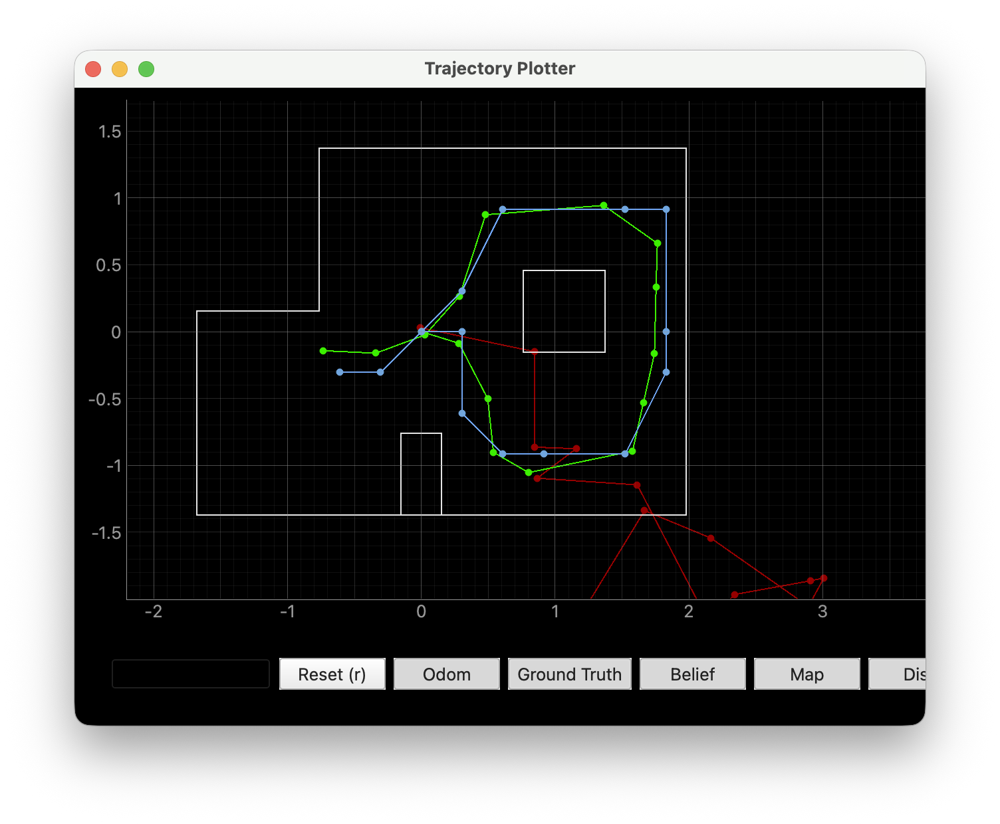
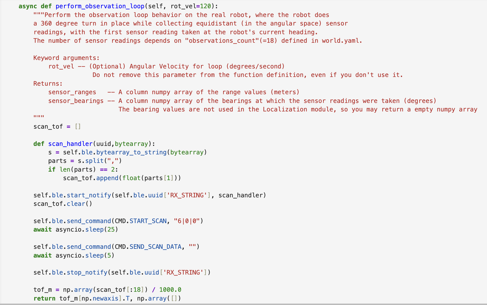
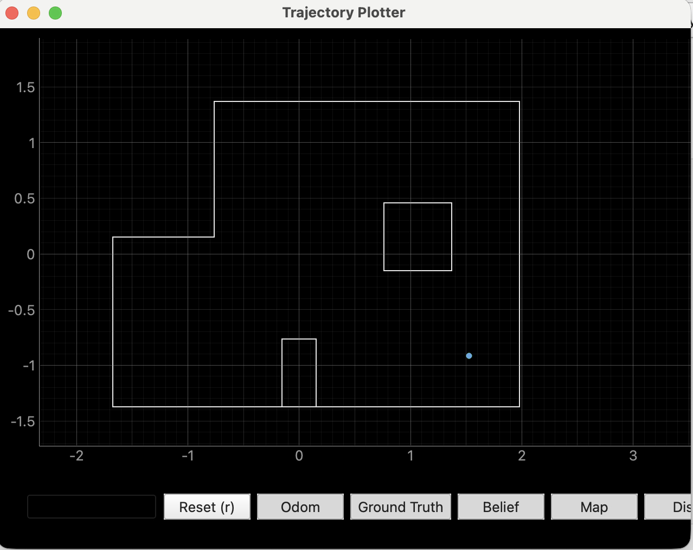
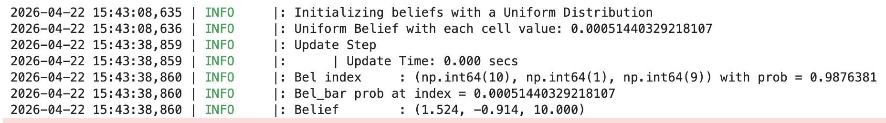
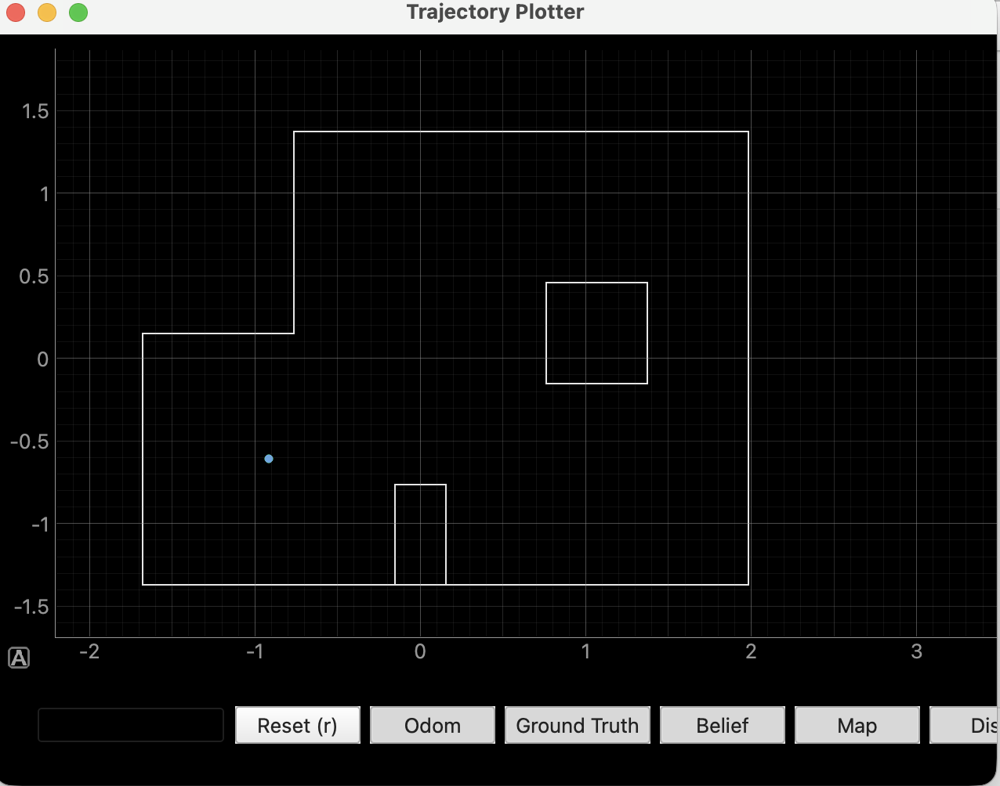
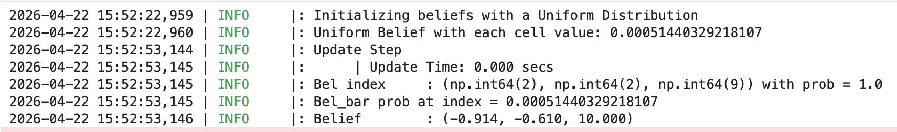
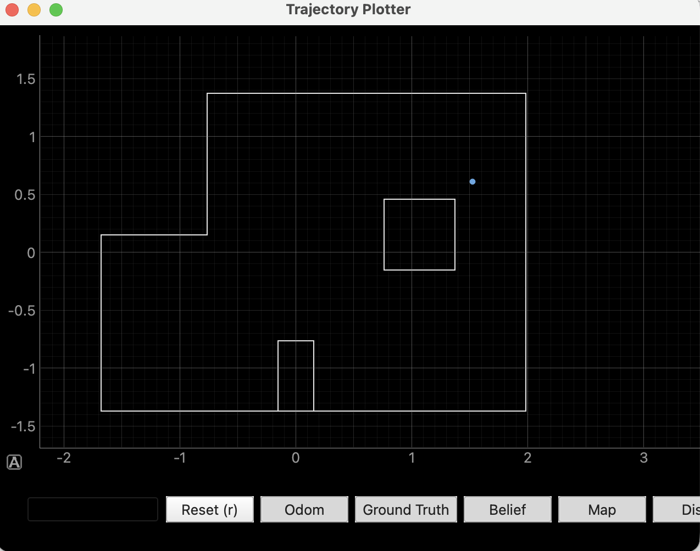
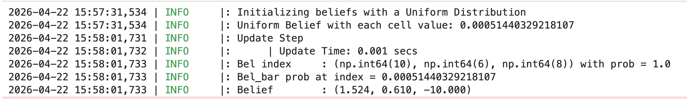
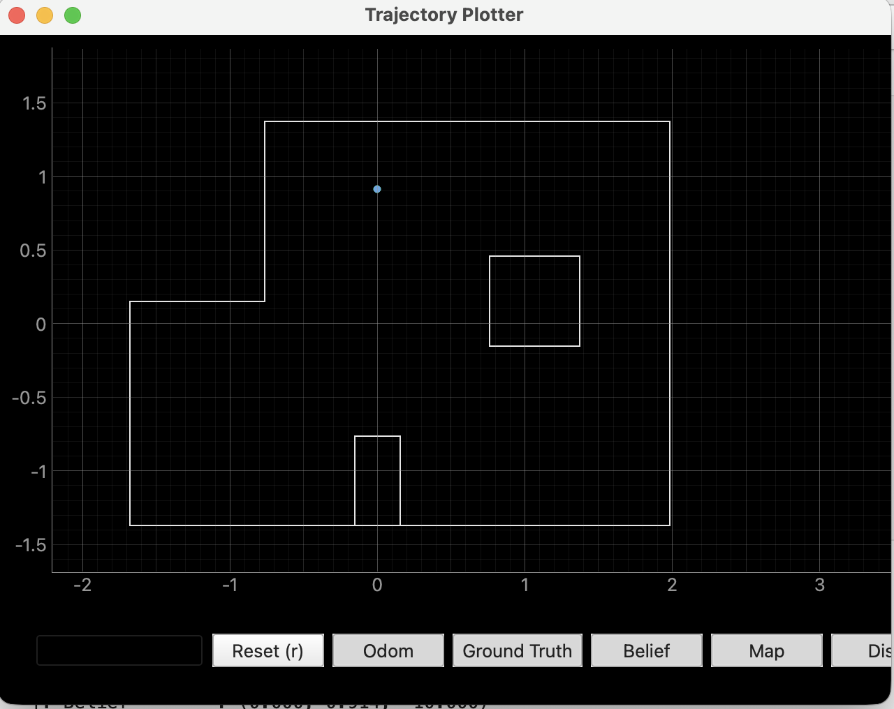
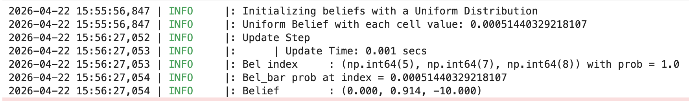

Lab 11: Localization on the Real Robot
Overview
In lab 10, we implemented the Bayes Filter in simulation using a virtual robot. In this lab, we will apply it to a real robot. Since the motion noise is too high to make prediction step useful, we only run the update step.
Simulation
I first verified the Bayes Filter implementation by running code with virtual robot. The simulation confirms that the localization code is functioning correctly. We can see that the green and blue lines represent the ground truth pose and the trajectory predicted by the Bayes Filter, respectively, while the red trajectory represents the odometry prediction, which exhibits severe drift.

Jupyter Implementation
On the Jupyter side, I reused the code from the mapping phase; the robot rotates 360 degrees in place, sampling 18 points to perform predictions. Because I used an async coroutine to wait for the robot to finish sampling and uploading data, I used the await keyword.

Result
Below are the prediction results obtained from the four points [5, -3], [5, 3], [-3, -2], and [0, 3], respectively. Overall, compared to the simulation results, the localization performance of the actual robot was unexpectedly good. This is because the update step relies solely on sensor readings rather than odometry; consequently, the robot's motion noise does not affect the results.
[5,-3]


[-3,-2]


[5,3]


[0,3]


Statement
I got much help from Yueming Liu's page.